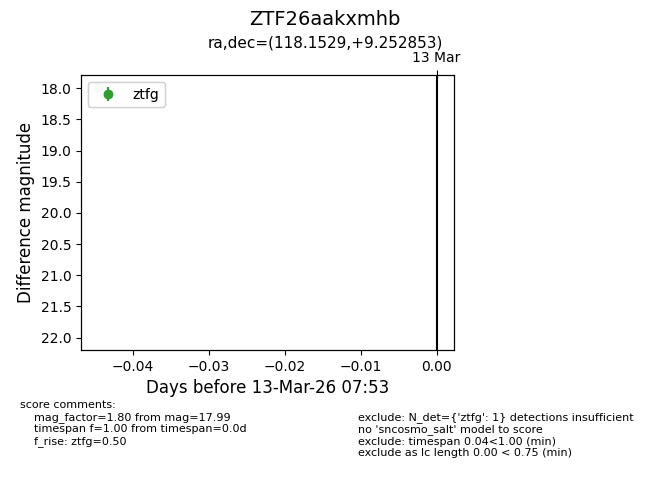
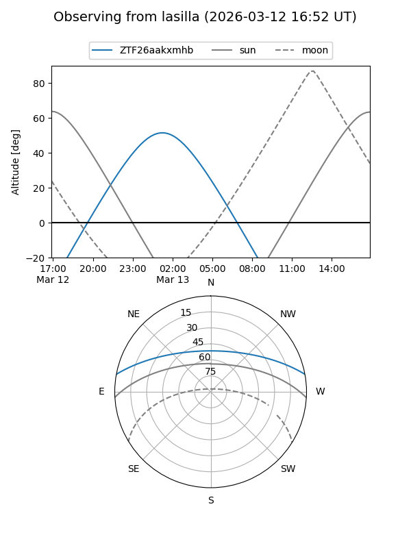
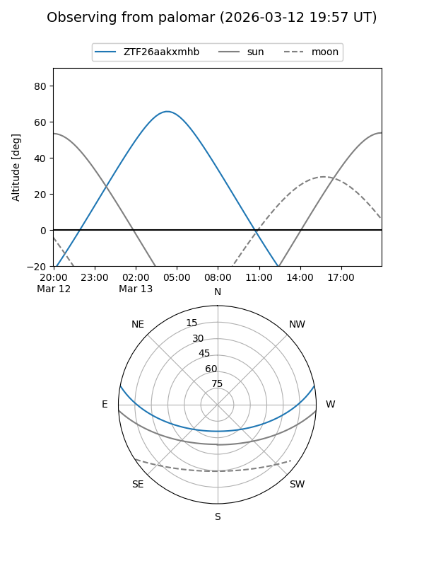

ZTF26aakxmhb
Target ZTF26aakxmhb at 2026-03-13 07:55
Aliases and brokers:
FINK: link
Lasair: link
ALeRCE: link
alt names
ZTF26aakxmhb (ztf,fink_ztf)
Coordinates:
equatorial (ra, dec) = 118.1529,+9.25285
equatorial (HMS+DMS) = 07:52:36.68,+09:15:10.27
galactic (l, b) = (211.4640,+17.75868)
Flags:
Photometry:
last ztfg=17.99
1 ztfg detections
Lightcurve

Visibility


Additional plots